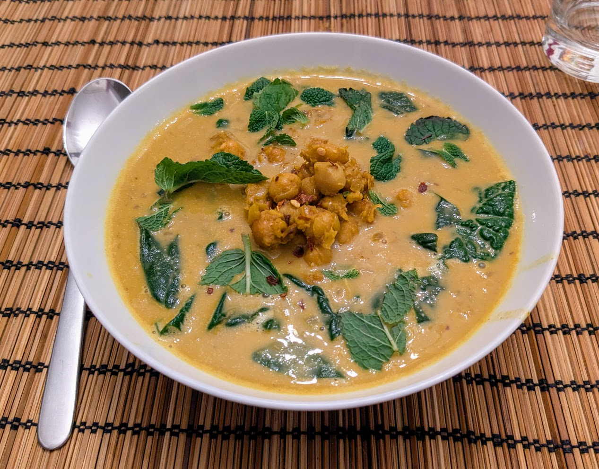

Pois chiches coco

Pour 3 personnes :
- Un gros oignon
- Cing gousses d'ail
- Un pouce de gingembre
- Deux cuillères à café de curcuma
- Une cuillère à café de piment de Cayenne
- Une cuillère à café de paprika fumé (ou doux, sinon)
- Deux boîtes de pois chiches (de 400g chaque)
- 800mL de lait de coco à 15% de matière grasse minimum
- 500mL de bouillon de légumes ou de poulet
- 250g d'épinards (ou un peu plus, un peu moins…)
- Quelques branches de menthe
- Un peu de flocons de piment
- Sel, poivre, huile d'olive
- Éplucher et émincer les oignons. Les faire revenir dans pas mal d'huile d'olive (genre 60mL) dans une cocotte en fonte, ou à défaut dans une casserole (si possible à fond épais).
- Éplucher et émincer l'ail et le gingembre, les ajouter dans la cocotte avec les épices, et un peu de poivre.
- Égoutter et rincer les pois chiches. Les rajouter dans la casserole avec un peu plus d'huile d'olive. Saler, poivrer, et laisser revenir le tout jusqu'à ce que les pois chiches brunissent.
- Récupérer environ une tasse (250mL) de pois chiches et les réserver. Écraser le reste grossièrement dans la cocotte, ajouter le lait de coco et le bouillon. Gratter au fond pour enlever ce qui a attaché, porter à ébullition, et laisser mijoter (à feu pas trop fort, il faut que ça frémisse) environ 45 minutes sans couvercle.
- Pendant ce temps, laver et équeuter les épinards, et les ajouter dans la cocotte 5 minutes. Goûter, rectifier l'assaisonnement si besoin.
- Pendant ce temps, laver les feuilles de menthe en coupant les très grosses en deux ou trois.
- Verser le ragoût dans les bols. Ajouter au centre de chaque bols une belle cuillère de pois chiches réservés, parsemer de menthe et de quelques flocons de piment. Servir bien chaud.